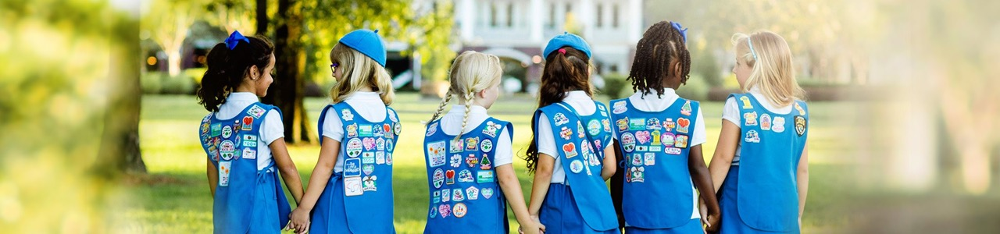

We Are Girl Scouts
Girl Scouts bring their dreams to life and work together to build a better world. Through programs from coast to coast, Girl Scouts of all backgrounds and abilities can be unapologetically themselves as they discover their strengths and rise to meet new challenges—whether they want to climb to the top of a tree or the top of their class, lace up their boots for a hike or advocate for climate justice, or make their first best friends. Backed by trusted adult volunteers, mentors, and millions of alums, Girl Scouts lead the way as they find their voices and make changes that affect the issues most important to them.
Mission
Girl Scouts have endless opportunities to lead
Girl Scouting builds girls of courage, confidence, and character, who make the world a better place.
Give Back
Make an impact on your community
Restock the local food pantry. Beautify your school’s playground. Lobby for change at a city council meeting. Making the world a better place is all in a day’s work for a Girl Scout. Take it to the next level when you earn the Girl Scout Bronze, Silver, or Gold Awards—our highest awards—to make a sustainable impact.